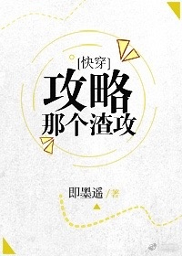

Como un verdadero presidente autoritario, escoria gong, cuando Xie He rechazó por enésima vez a su admirador, escuchó una frase en su cabeza: "Felicitaciones por lograr el logro de "rechaza 100 hosts"; Como premio, pronto te vincularás al sistema "Scum Gong and Cheap Shou", ingresando a otros mundos para completar misiones de captura.
Como un gong de escoria, Xie He expresa que es muy fácil ocultar los verdaderos colores de uno, pero...
"Escuché que el hermano de mi novio me ama en secreto"
"Maestro, ámame una vez más"
"Manual para la crianza de jóvenes"
"Su Majestad, este sirviente obedece"
"El amante sustituto del Señor Tirano"
"Cautivo del Imperio"
"Horno de cultivo del discípulo"…
Xie He: Espera un minuto. Estas palabras suenan realmente extrañas… ¿y por qué mi papel es el de 'shou barato'?
Sistema: Combatir el veneno con veneno. Usar escoria para superar la escoria. ¡Confiaré en ti para abusar del gong de escoria! Recuerda no OOC~
Xie He: Jeje.
Más tarde…
Xie He: ¿Hm? ¿Dices que toda la escoria me ama? Lo siento, sólo me amo a mí mismo.
Gong de escoria: ???